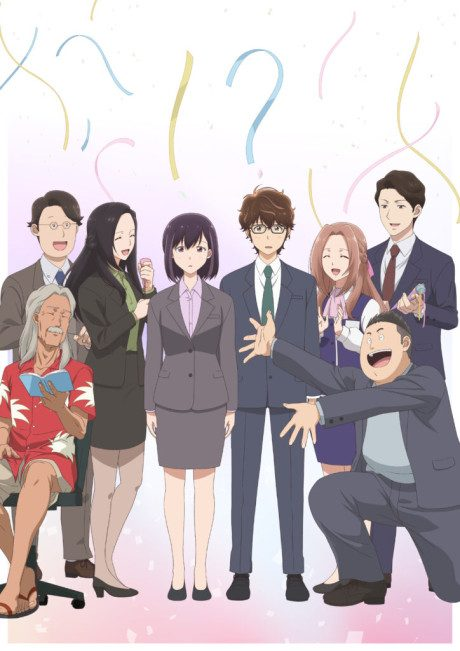
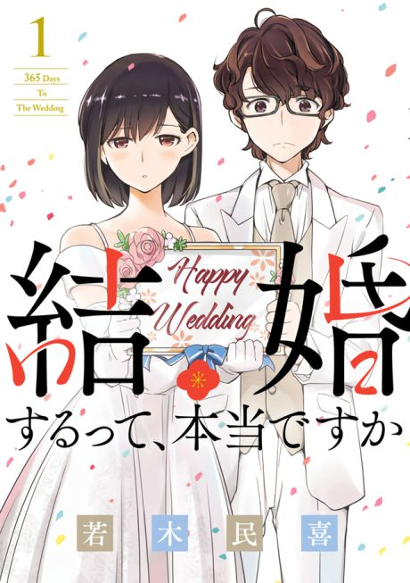

365 Days to the Wedding
結婚するって、本当ですか
Two quiet coworkers at a Tokyo travel agency fake an engagement so they won't be sent to the company's new branch in Alaska.
After the anime, read the manga from Chapter 53.
7.0AniList score
—Animeter, no votes yet
12episodes
Rate it or report where you stopped
Is it worth pushing through?
Built from what visitors report across all 12 episodes.
Loading reports…Checking what other people said about this one.
Sign in above with your email to add your report.
More like 365 Days to the Wedding
 Manga Ch. 298.1
Manga Ch. 298.1
 Manga Ch. 407.3
Manga Ch. 407.3
 Manga Ch. 777.4
Manga Ch. 777.4
 Unclear6.7
Unclear6.7
Manga Ch. 506.7
My Tiny Senpai Manga Ch. 568.0
Manga Ch. 568.0
 Done7.4
Done7.4
 Manga Ch. 1077.7
Manga Ch. 1077.7
 Manga Ch. 1528.3
Manga Ch. 1528.3
 Manga Ch. 376.9
Manga Ch. 376.9
 Manga Ch. 177.2
Manga Ch. 177.2
 Manga Ch. 297.4
Manga Ch. 297.4